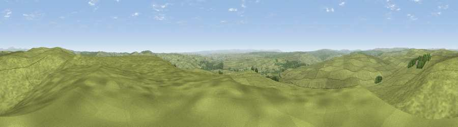

Viewpoint near Bellingham
#7607 in England · top 16% of its area beats it · near Bellingham · open accessWhere it is
The exact computed spot (NY 84975 86562). Click the marker for map links.
Public access: this spot lies on mapped open-access land (CRoW Act 2000) — you may roam here on foot. Computed from Natural England's CRoW access layer and OpenStreetMap rights of way — not the legal definitive map. Always verify locally.
The view, rendered

A 360° render of this exact spot computed from the terrain model, tree cover and land cover — summer colours, afternoon light, calibrated against photographs of famous viewpoints. Real trees, hedges and buildings will differ in detail.
The panorama
Grey silhouette: terrain skyline in each direction (720 bearings, Earth curvature and refraction included). Dashed green: skyline with trees (+15 m) and buildings (+8 m) as obstacles. Blue strip: how far the ground is visible on each bearing.
Where the view opens
Wedge length = distance to the farthest visible ground on that bearing (vegetation-aware). Rings at 10, 25 and 50 km.
What fills the view
95% grassland · 5% woodland
Angular shares of the visible panorama (visual magnitude), not map area. Landscape diversity 0.09 (0–1 Shannon).
Key numbers
More beautiful places nearby
The staircase of upgrades: each row has a higher view potential than everything closer. Driving times are estimates from straight-line distance, calibrated against real road routing — check an actual route before setting out.
| Place | Direction | Drive | Score |
|---|---|---|---|
| Viewpoint near West Woodburn | NNE · 2 km | ~5 min | 66.9 |
| Viewpoint near West Woodburn | NE · 2 km | ~5 min | 70.1 |
| Viewpoint near West Woodburn | NE · 2 km | ~6 min | 70.4 |
| Padon Hill | NNW · 7 km | ~14 min | 72.6 |
| Viewpoint near West Woodburn | ESE · 8 km | ~16 min | 73.4 |
| Blackman's Law | NW · 15 km | ~27 min | 74.1 |
| Darden Rigg | NE · 17 km | ~30 min | 77.0 |
| Ellis Crag | NW · 18 km | ~31 min | 77.2 |
55.17314, -2.23743 · source: screening · position refined by local search. Computed location — check access rights before visiting.